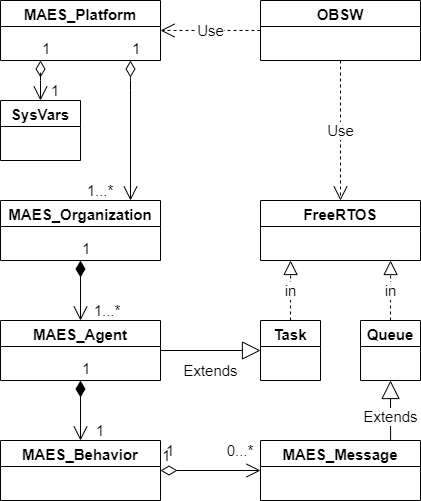
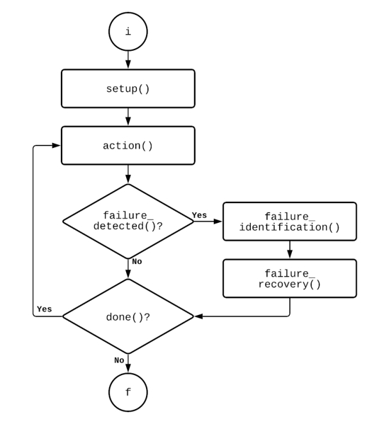

Visión General
FreeMAES corresponde a una biblioteca que implementa el paradigma de software MAES (Multi-Agent Framework for Embedded Systems) para el sistema opeativo FreeRTOS. Opera como un complementao al sistema operativo para desarrollar aplicaciones con arquitectura basada en agentes.
Para realizar aplicaciones mediante la biblioteca FreeMAES primeramente hay que comprender los concptos relacionados con
- Sistemas multiagente
- El modelo FIPA para software multiagente
- El APU de FreeRTOS
En esta guía se omitiarán las explicaciones de componenetes ajenos al contenido de la biblioteca
Modelo de clases para FreeMAES
Diagrama del modelo

Mediante las clases y relaciones mostradas en el diagrama, se puede notar que:
- Los agentes corresponden a contenedores de tareas mediante su comportamiento, que a su vez pueden incluir un sistema de mensajería que encapsula una cola dedicada por agente
- Los agentes pueden asociarse por organizaciones designadas como equipos o jerarquías que pertenecen a una única plataforma de software conteida en el equipo electrónico.
- La clase
sysVarsfunciona como un arreglo de variables de entorno que soporta otras funciones del paradigma.
API FreeMAES
A continuación, se desarrollan brevemente el propósito y capacidades de las clases que componene el API de FreeMAES. El desglose completo de métodos y estructuras de datos se encuentra al final.
Agentes
Los agentes se crean mediante el método constructor de la clase Agent. EL constructor de la clase solicita parámetros como el nombre del agente, la prioridad y la profundidad del stack (tal como se define en las tareas de FreeRTOS). Incluye un único método que retorna el identificador del agente (AID).
Comportamientos
Diagrama del funcionamiento de execute

Los comportamientos encapsulan las funciones de FreeRTOS que crean las tareas y buzones para los agentes. En este API se incluyen tres comportamientos com métodos virtuales: una clase genérica y dos subclases derivadas
- comportamiento cíclico
- comportamiento One Shot (una sola ejecución)
La principal diferencia entre las clases derivadas corresponde al método done, pues para el comportamiento cíclico siempre es verdadero y para el One Shot es falso.
El método execute asocia los métodos de cada clase y subclase como se muestra en el diagrama. Dicho método debe encerrarse con una función wrapper ára ser asignado como la función de tarea de un agente
Mensajes
Los mensajes transportan la información entre agentes; son etiquetados con
- Tipo de mensaje
- Destinarario
- Remitente
EL usuario directamente no debe crear cada mensaje pues están contenidos dentro de los comportamientos de cada agente. Cada agente posee un buzón (cola de FreeRTOS) con longitud unitaria. Para administrar la información de los mensajes el usuario debe usar los métodos de la clase Agent_Message.
Organizaciones
El constructor de la clase Agent_Organization requiere definir el tipo de organización TEAM (equipo) o HEIRARCHY (jerarquía). En un equipo la comunicación está limitada a los miembros del equipo sin demás restricciones mientras que en una jerarquía los mimebros solo pueden comunicarse con el moderador de su organización. La definición del dueño se ejecuta dentro del comportamiento del agente promocionado como dueño. Dicho agente puede enviar solicitudes mediante mensajes a otros agentes para unirse a la organización.
Plataforma
La clase Agent_Platform administra el registro e inicialización de los agentes, así como métodos misceláneos para el controla de tareas. Los métodos de la clase son todos públicos aunque están condicionados al agente (o mejor dicho tarea) que les convoque. Los métodos se pueden visualizar como
- Funciones pre-calendarizador
- Funciones del Agente AMS
- Funciones no restringidas.
Las funciones pre-calendarizador inician los agentes y arrancan el registro de los objetos a las variables de entorno de la plataforma, para estas funcionar es necesario que ninguna tarea se esté ejecutando. Las funciones del Agente AMS corresponden a:
- Registros
- Dadas de baja
- Terminaciones
- Suspensión
- Reanudación de los agentes
Finalmente, las funciones no restringidas producen demoras en las tareas (Task Delays), buscan agentes, descripciones y estados de agentes; entre otros.
El constructor de esta clas solo solicita un parámetro; el nombre para la plataforma, sin embargo, puede iniciarse además con un parámetro más que defina las condiciones del Agente AMS mediante la clase USER_DEF_COND
sysVars
Contenedor de variables de entorno, no debe ser usado por el usuario